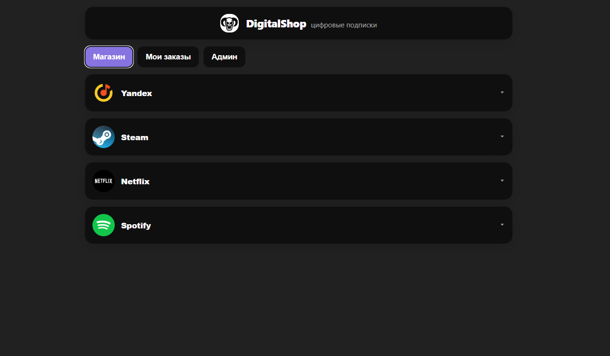
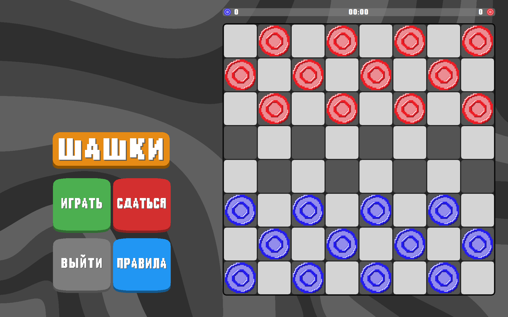
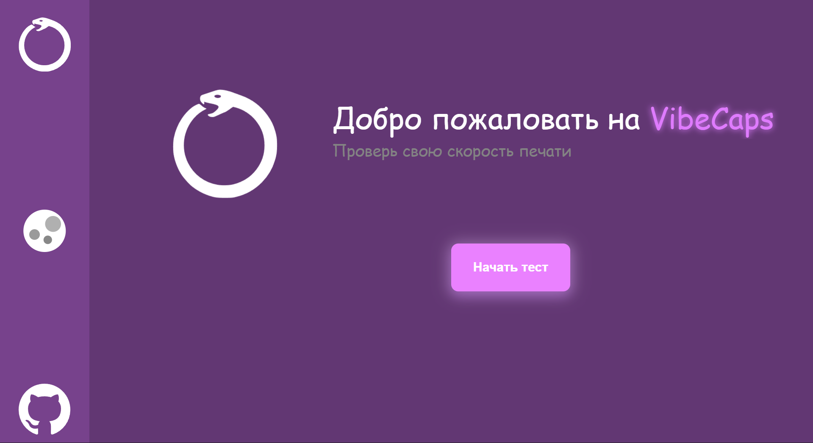

Мои проекты
Кликните на карточку проекта, чтобы увидеть подробное описание.

Digital Shop — телеграм веб-приложение
Магазин покупки цифровых товаров, таких как подписки на различные сервисы, пополнение игровых кошельков и др.
React

Шашки — десктопная игра
Классические русские шашки с поддержкой двух игроков на одном устройстве.
C++ / Qt

VibeCaps — тест скорости печати
Интерактивный тренажёр для измерения и улучшения скорости печати в реальном времени.
JavaScript